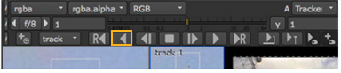

稳定是移除运动相机抖动的过程，例如，锁定复合材料的元素。一点轨迹提供了足够的信息来稳定沿图像平面的水平和垂直运动。两点轨迹允许您稳定水平和垂直运动，并删除图像中的旋转。
注意: 本示例使用自动跟踪，但关键帧跟踪的稳定原则相同。
| 1。 | 找到标记为的节点树 稳定元素 . |
| 2. | 你会看到相同的副本 伦敦眼 阅读我们在其他例子中使用的节点。点击它来选择它。 |
| 3. | 选择 变换 > 跟踪器 然后将查看器附加到新的 Tracker3 节点。双击节点以打开 “属性” 面板。 |
| 4. | 在 “属性” 面板中，单击 添加轨道 两次创建两个跟踪锚。 |
| 5. | 对于每个轨道 轨道 列表中，选中 T (翻译), R (旋转) 和 S (比例)。 |
| 6. | 在查看器中，擦洗到序列的末尾，并根据下图所示的功能调整每个跟踪标记的大小和位置。 |
| 7. | 在中选择两个轨迹 轨道 列表。 |
| 8。 | 在查看器的顶部，单击 向后跟踪 用于生成轨迹的按钮。 |

现在您有了两个轨迹的位置数据，您可以使用这些信息删除图像中不需要的移动。

| 9. | 在 Tracker3 属性面板中，单击 设置 选项卡并打开自动跟踪子菜单。 |
| 10. | 设置 扭曲类型 到 平移/旋转/缩放 所以跟踪器预计所有三个转变。 |
注意: 如果您使用的是关键帧轨迹，则无需设置 扭曲类型 .
| 11。 | 单击 变换 标签和选择 稳定 从 变换 列表。 |

注意: 当您使用单个轨道跟踪简单翻译时，您可以使用 稳定 1-pt 为了更快的计算。
| 12. | 在查看器中，单击 “播放” 查看结果。 |
当剪辑播放时，您将看到特征保持锁定在合成框架中的相同位置。
提示: 跟踪并稳定素材后，您可以添加 变换 > 变换 节点经过 Tracker3 节点调整位置并旋转稳定图像进行最终合成。
|
|